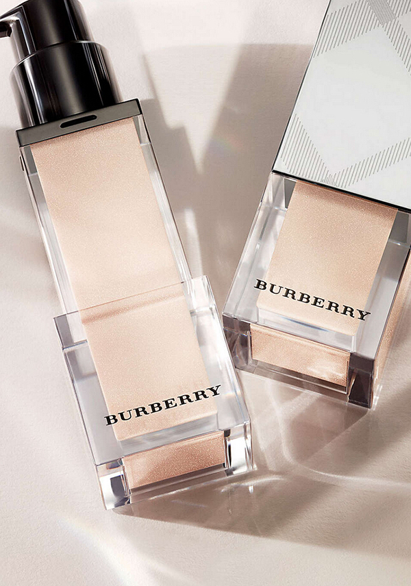
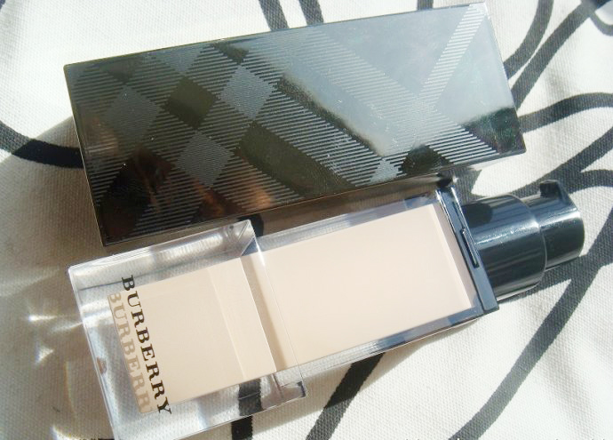
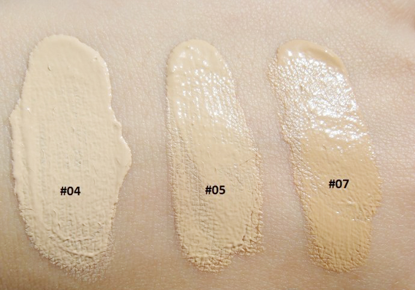
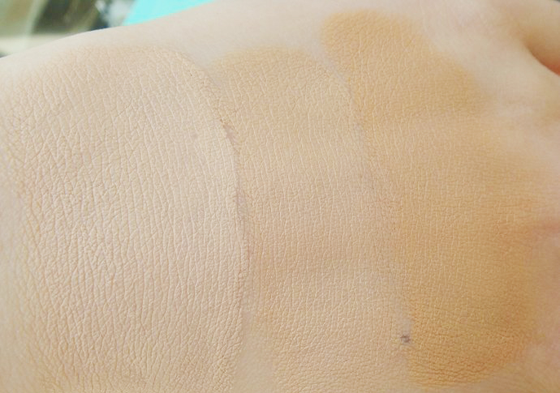

小美资深小编
概况

外观设计
3.5
时装品牌要抢美妆界的一杯羹完全不新鲜，早有DIOR和YSL在前，中期的ARMANI，新秀个人觉得差不多就是TOM FORD,BURBERRY和DG，各家包装均有时装甚至高定的风采，这就和LV曾出品过1600港币的两颗亚克力材质方块的发绳一样，更多选择更多欢笑，尽在配饰与美妆。

专柜 BA 给我选的色号是 Trench #04, 上手试过感觉很 match! 之后专柜 BA 送了我个小样, 里面有两包深色的粉底液, 分别是 Trench #05, Trench #07! 她推荐我可以用它来作修容用!
效果说是比修容粉自然些!

看来只有 #07 作修容色比较给力吧, #05 虽然是深点我用不了它作全脸粉底用, 但用作修容也浅了点! #04 是我买的色号了!

发表一下我的初步感想:
Burberry 这款粉底在专柜试及自己用时最深刻的感想就是, 它的保湿感觉很明显, 一上手就有一种水水润润的感觉, 无油无厚重感, 感觉很舒服. 推开时感觉很好推, 质地奶油奶油, 可是又不像某些奶油粉霜那样又厚又油.
它是粉底却推的时候感觉有粉霜感觉. 推开后很湿湿很舒服, 效果也很自然! (我试色用得多了点可能厚啊! 呵呵不好意思). 遮瑕能力也不错, 比很多粉底液都要好, 具体还是等我哪天全脸用上时再细说:)!!!